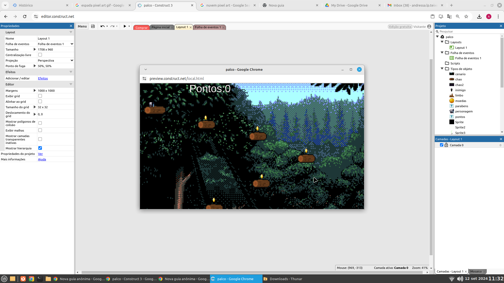

Formação Acadêmica: Graduação em psicologia, arte e design de moda, pós educação especial, psicologia organizacional, pós em arte educação.
Do Que trabalhou: Professora, empresa de informática, na área administrativa. No passado já trabalhou em uma escola especial como psicóloga.
Atualmente dá aula no 1°TDS, mais foi responsável por assinar abertura dos cursos de RH aqui nesse colégio. Deu aula de psicologia tanto pro RH quanto pro secretariado.


Clique na imagem acima para jogar um produzido especialmente para a professora
Cândida!
Querida Professora Fabiana
Para Fabiana: A Senhora demonstra um profundo conhecimento da matéria e uma habilidade excepcional em motivar os alunos a alcançarem seu melhor desempenho acadêmico.
Ass: Samuel Soares Pereira
2° TDS
Quero te agradecer e parabenizar pelos seus ensinamentos.
“O verdadeiro professor inspira os alunos a aprender através do seu jeito de ensinar”
Ass: Thainá Soares.
Turma: 2º TDS.
Fabiana Trevisan : O que faz de você uma professora especial não são só suas aulas, mas o modo como se relaciona com seus alunos e colegas Parabéns pelo seu trabalho. ❤
Fabiana Trevisan : O que faz de você uma professora especial não são só suas aulas, mas o modo como se relaciona com seus alunos e colegas Parabéns pelo seu trabalho. ❤
Luiz Henrique Segatto - 4º INFO
 Clique na imagem acima para dar sua opinião sobre nosso projeto!
Clique na imagem acima para dar sua opinião sobre nosso projeto!